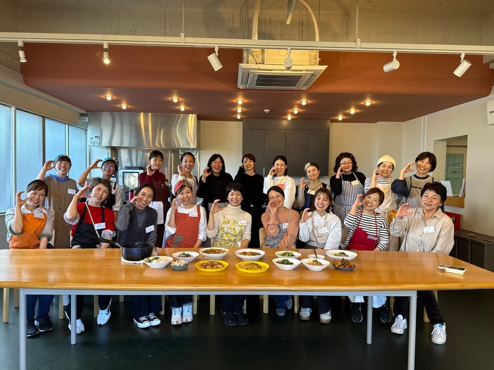
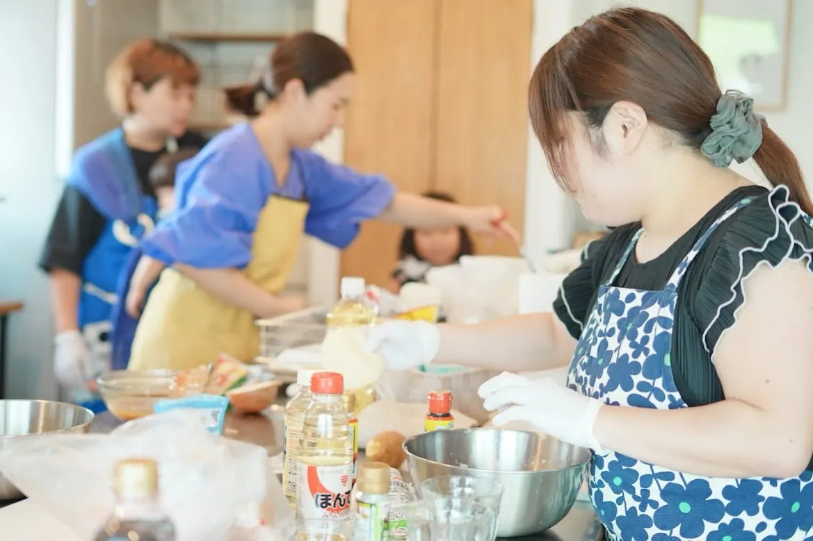
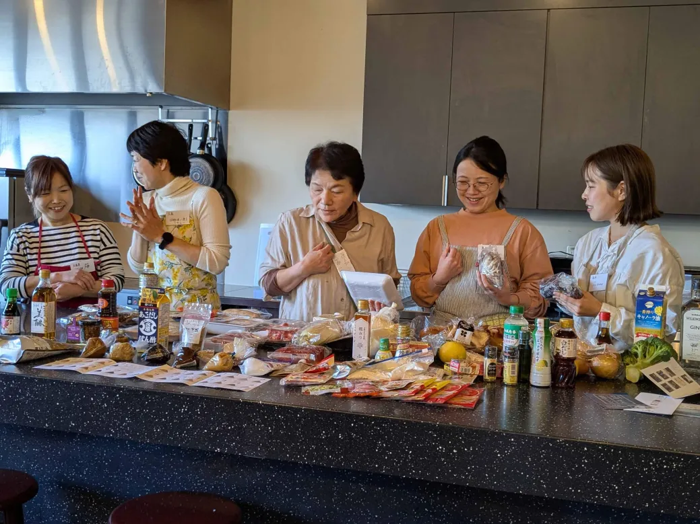
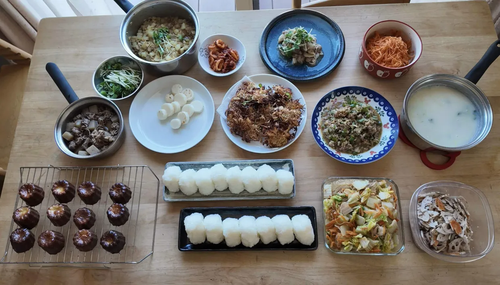

CRESCIA START PACK
料理代行を始めるために必要な基礎知識を、
現役料理代行人と各分野の専門家から学ぶ
「クレッシャ認定｜料理代行スタートパック」

PROBLEM
料理代行を始めようとすると、料理の技術だけではなく、料金設定・契約・保険・衛生管理・個人情報・トラブル対応・経理など、 仕事として考えることがたくさんあります。
よくある不安
だからこそ必要なのは
ABOUT CRESCIA
クレッシャは、全国の料理代行人と、これから料理代行を始めたい人がつながる
料理代行コミュニティサロンです。

料理代行の仕事は、料理の技術だけでは成り立ちません。
衛生管理、価格設定、個人情報、契約、保険、トラブル対応、集客など、仕事として必要なことを、現場で培ってきた知識とともに学びます。

一人で悩む時間は、サービス向上の時間へ。
料理代行を始めた後も、現役の仲間や専門家とつながりながら、安心して仕事に向き合える環境を大切にしています。

料理代行を仕事として続けていくためには、知識だけでなく、相談できる場所が必要です。
クレッシャは、その最初の基盤をつくる場です。
WHY START PACK
料理代行を始めること自体は、特別な資格がなければできない仕事ではありません。
だからこそ、「とりあえず始めてみる」こともできます。
でも、仕事として誰かの家庭に入るなら、始める前に知っておきたいことがあります。
「料理ができる」から
「安心して料理代行を仕事にできる」へ。
クレッシャでは、現役の料理代行人が現場で培ってきた経験と、行政書士・税理士・保険専門家・保健師など
各分野の専門知識を組み合わせ、料理代行を仕事として始めるために必要な基礎を整えます。
そのための最初の一歩として、スタートパックをつくりました。
START PACK
「料理が好き。」
その想いを、安心して仕事に。
料理代行を始めるための最初の基盤
135,000円
（税込）
講座だけではありません。
専門家監修
学習コンテンツ
現場の知見
現役料理代行人の実践知
個別相談
1時間×3回
クレッシャ
6か月無料参加
EXPERTS
料理代行を仕事として始めるには、料理だけの知識ではなく、さまざまな視点が必要です。
クレッシャでは、現役料理代行人だけでなく、行政書士・税理士・保険専門家・保健師の視点も取り入れ、
仕事として安心して取り組める基礎を学べる構成にしています。
現役料理代行人
行政書士
税理士
保険専門家
保健師
5 LEARNINGS
料理代行の現場、仕事の流れ、サービス設計など、これから始めるための土台を学びます。
衛生管理、個人情報、接客、トラブル予防など、家庭に入って仕事をするうえで知っておきたい基本を学びます。
価格設定、契約、保険、経理など、「好きな料理」を仕事として続けるための基礎を学びます。
公式LINEなどを活用し、予約や問い合わせにつながる導線を整える準備を行います。
オンライン個別相談と、全国料理代行コミュニティ「クレッシャ」への6か月無料参加で、始めた後も相談しながら進めていけます。
BEFORE / AFTER
Before
After
LEARNING FLOW
COMMUNITY
地域を越えた仲間と、現場のリアルな話を共有できます。
日々の疑問や、悩みの種を気軽に相談できる場があります。
知識を深め、仲間と一緒に学び合える機会が続きます。
法務・保険・経理など、仕事に必要な知識をタイムリーに知る機会があります。
「いま迷っている」「この対応で大丈夫かな」など、気になることを、仲間や専門家にまず相談できる場です。
FOR WHO
START PACK DETAIL
衛生知識・サービス設計・価格設定・ヒアリング・接客マナー・コミュニケーション・個人情報管理
行政書士監修／契約書と利用規約・広告表現の注意点・個人情報保護・トラブル予防
保険専門家監修／賠償責任の基礎・事故発生時の対応・保険の考え方
税理士監修／個人事業主の基礎・日々の経理
予約受付導線の構築・初期設定サポート
半年間有効／1時間×3回
6か月間無料参加。受講後も、全国の料理代行人や専門家とつながりながら、安心して仕事を続けられる場を提供します。
PRICE
135,000円
（税込）
受講内容の価値が一目でわかる
FAQ
LAST CTA
料理代行を始める前に、ちゃんと知っておくこと。
その準備を、クレッシャが支えます。